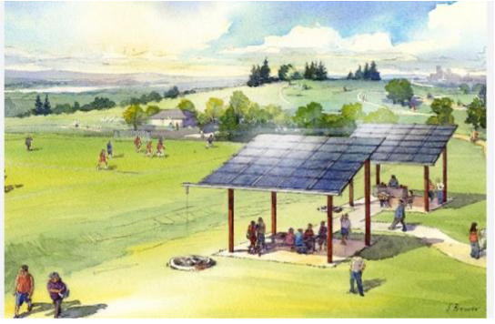

Parc vert Écologique et Technologique
Selon notre sondage,
ODD 11: Villes et communautés durables
L’avenir que nous voulons comprend des villes qui offrent à tous de grandes possibilités
Heresh Beyrouth : Un parc vert écologique et technologique
Selon les données statistiques récentes, Beyrouth fait face à une diminution alarmante de ses espaces verts, avec une perte annuelle moyenne de 1,2% (source : Ministère de l’Environnement du Liban). Cette tendance est préoccupante car les espaces verts sont essentiels pour la santé mentale et physique des citadins, ainsi que pour la biodiversité urbaine, et leur diminution aggrave les problèmes environnementaux tels que la pollution de l’air et le réchauffement climatique.Dans la vision d’un Liban futuristique, Herech Beyrouth émerge comme un havre de paix et de convergence sociale. Conçu pour accueillir des individus de toutes croyances et origines sociales, cet espace luxuriant devient alors le poumon vert de la métropole.
Solution
Une innovation spécifique qui pourrait résoudre ce problème à Beyrouth est l’intégration de panneaux solaires intelligents le long des sentiers. Ces panneaux solaires alimentent les lampadaires et les équipements électriques du parc, réduisant ainsi la dépendance aux énergies non renouvelables et contribuant à la durabilité environnementale de la capitale. Ils peuvent également servir de stations de recharge solaire pour les appareils électroniques des visiteurs, encourageant ainsi l’utilisation de l’énergie solaire et la réduction des déchets liés aux piles. Cette innovation permet une gestion plus efficace et durable de Herech Beyrouth tout en offrant une expérience améliorée aux visiteurs.Avantages
L’intégration de panneaux solaires intelligents dans Herech Beyrouth offre de multiples avantages pratiques.En plus de réduire l’empreinte carbone du parc, cela permet de réaliser des économies d’énergie et de coûts à long terme pour la municipalité de Beyrouth.
De plus, en fournissant une source d’énergie renouvelable et durable, cela renforce la résilience de ce parc urbain face aux perturbations climatiques et aux pannes de courant qui peuvent être fréquentes dans la région.
Enfin, en offrant des stations de recharge solaire pour les appareils électroniques des visiteurs, cette innovation répond aux besoins technologiques modernes tout en encourageant un mode de vie plus respectueux de l’environnement à Beyrouth.  En résumé, l’intégration de panneaux solaires intelligents dans les parcs urbains de Beyrouth représente une innovation prometteuse pour résoudre le problème de la diminution des espaces verts dans la capitale libanaise.
En fournissant une source d’énergie renouvelable, durable et économique, cette innovation contribue à la durabilité environnementale de Beyrouth tout en répondant aux besoins technologiques modernes des visiteurs.